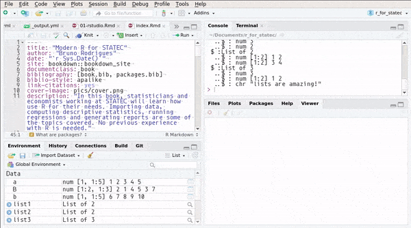
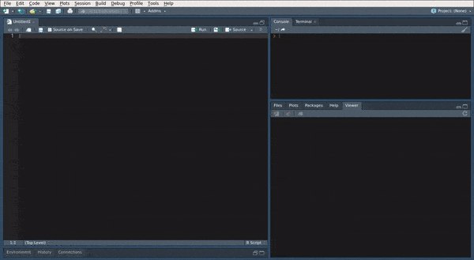

Chapter 2 Objects, types and useful R functions to get started
All objects in R have a given type. You already know most of them, as these types are also used in mathematics. Integers, floating point numbers, or floats, matrices, etc, are all objects you are already familiar with. But R has other, maybe lesser known data types (that you can find in a lot of other programming languages) that you need to become familiar with. But first, we need to learn how to assign a value to a variable. This can be done in two ways:
or
in very practical terms, there is no difference between the two. I prefer using <- for assigning
values to variables and reserve = for passing arguments to functions, for example:
I think this is less confusing than:
but as I explained above you can use whatever you feel most comfortable with.
2.1 The numeric class
To define single numbers, you can do the following:
The class() function allows you to check the class of an object:
## [1] "numeric"Decimals are defined with the character .:
R also supports integers. If you find yourself in a situation where you explicitly need an integer and not a floating point number, you can use the following:
## [1] "integer"The as.integer() function is very useful, because it converts its argument into an integer. There
is a whole family of as.*() functions. To convert a into a floating point number again:
## [1] "numeric"There is also is.numeric() which tests whether a number is of the numeric class:
## [1] TRUEThese functions are very useful, there is one for any of the supported types in R. Later, we are going
to learn about the {purrr} package, which is a very powerful package for functional programming. This
package includes further such functions.
2.2 The character class
Use " " to define characters (called strings in other programming languages):
## [1] "character"To convert something to a character you can use the as.character() function:
## [1] "numeric"## [1] "character"It is also possible to convert a character to a numeric:
## [1] "character"## [1] "numeric"But this only works if it makes sense:
## [1] "character"## Warning: NAs introduced by coercion## [1] NAA very nice package to work with characters is {stringr}, which is also part of the {tidyverse}.
2.3 The factor class
Factors look like characters, but are very different. They are the representation of categorical
variables. A {tidyverse} package to work with factors is {forcats}. You would rarely use
factor variables outside of datasets, so for now, it is enough to know that this class exists.
We are going to learn more about factor variables in Chapter 4, by using the {forcats} package.
2.4 The Date class
Dates also look like characters, but are very different too:
## [1] "2019-03-19"## [1] "Date"Manipulating dates and time can be tricky, but thankfully there’s a {tidyverse} package for that,
called {lubridate}. We are going to go over this package in Chapter 4.
2.5 The logical class
This class is the result of logical comparisons, for example, if you type:
## [1] TRUER returns TRUE, which is an object of class logical:
## [1] "logical"In other programming languages, logicals are often called bools. A logical variable can only have
two values, either TRUE or FALSE. You can test the truthiness of a variable with isTRUE():
## [1] TRUEHow can you test if a variable is false? There is not a isFALSE() function (at least not without having
to load a package containing this function), but there is way to do it:
## [1] FALSEThe ! operator indicates negation, so the above expression could be translated as is k not TRUE?.
There are other such operators, namely &, &&, |, ||. & means and and | stands for or.
You might be wondering what the difference between & and && is? Or between | and ||? & and
| work on vectors, doing pairwise comparisons:
## [1] FALSE FALSE TRUE FALSECompare this to the && operator:
## [1] FALSEThe && and || operators only compare the first element of the vectors and stop as soon as a the return
value can be safely determined. This is called short-circuiting. Consider the following:
one <- c(TRUE, FALSE, TRUE, FALSE)
two <- c(FALSE, TRUE, TRUE, TRUE)
three <- c(TRUE, TRUE, FALSE, FALSE)
one && two && three## [1] FALSE## [1] TRUEThe || operator stops as soon it evaluates to TRUE whereas the && stops as soon as it evaluates to FALSE.
Personally, I rarely use || or && because I get confused. I find using | or & in combination with the
all() or any() functions much more useful:
## [1] TRUE## [1] FALSEany() checks whether any of the vector’s elements are TRUE and all() checks if all elements of the vector are
TRUE.
As a final note, you should know that is possible to use T for TRUE and F for FALSE but I
would advise against doing this, because it is not very explicit.
2.6 Vectors and matrices
You can create a vector in different ways. But first of all, it is important to understand that a vector in most programming languages is nothing more than a list of things. These things can be numbers (either integers or floats), strings, or even other vectors. A vector in R can only contain elements of one single type. This is not the case for a list, which is much more flexible. We will talk about lists shortly, but let’s first focus on vectors and matrices.
2.6.1 The c() function
A very important function that allows you to build a vector is c():
This creates a vector with elements 1, 2, 3, 4, 5. If you check its class:
## [1] "numeric"This can be confusing: you where probably expecting a to be of class vector or
something similar. This is not the case if you use c() to create the vector, because c()
doesn’t build a vector in the mathematical sense, but a so-called atomic vector.
Checking its dimension:
## NULLreturns NULL because an atomic vector doesn’t have a dimension.
If you want to create a true vector, you need to use cbind() or rbind().
But before continuing, be aware that atomic vectors can only contain elements of the same type:
## [1] "1" "2" "3"because “3” is a character, all the other values get implicitly converted to characters. You have to be very careful about this, and if you use atomic vectors in your programming, you have to make absolutely sure that no characters or logicals or whatever else are going to convert your atomic vector to something you were not expecting.
2.6.2 cbind() and rbind()
You can create a true vector with cbind():
Check its class now:
## [1] "matrix"This is exactly what we expected. Let’s check its dimension:
## [1] 1 5This returns the dimension of a using the LICO notation (number of LInes first, the number of COlumns).
It is also possible to bind vectors together to create a matrix.
Now let’s put vector a and b into a matrix called matrix_c using rbind().
rbind() functions the same way as cbind() but glues the vectors together by rows and not by columns.
## [,1] [,2] [,3] [,4] [,5]
## [1,] 1 2 3 4 5
## [2,] 6 7 8 9 102.6.3 The matrix class
R also has support for matrices. For example, you can create a matrix of dimension (5,5) filled
with 0’s with the matrix() function:
If you want to create the following matrix:
\[ B = \left( \begin{array}{ccc} 2 & 4 & 3 \\ 1 & 5 & 7 \end{array} \right) \]
you would do it like this:
The option byrow = TRUE means that the rows of the matrix will be filled first.
You can access individual elements of matrix_a like so:
## [1] 0and R returns its value, 0. We can assign a new value to this element if we want. Try:
and now take a look at matrix_a again.
## [,1] [,2] [,3] [,4] [,5]
## [1,] 0 0 0 0 0
## [2,] 0 0 7 0 0
## [3,] 0 0 0 0 0
## [4,] 0 0 0 0 0
## [5,] 0 0 0 0 0Recall our vector b:
To access its third element, you can simply write:
## [1] 8I have heard many people praising R for being a matrix based language. Matrices are indeed useful, and statisticians are used to working with them. However, I very rarely use matrices in my day to day work, and prefer an approach based on data frames (which will be discussed below). This is because working with data frames makes it easier to use R’s advanced functional programming language capabilities, and this is where R really shines in my opinion. Working with matrices almost automatically implies using loops and all the iterative programming techniques, à la Fortran, which I personally believe are ill-suited for interactive statistical programming (as discussed in the introduction).
2.7 The list class
The list class is a very flexible class, and thus, very useful. You can put anything inside a list,
such as numbers:
or other lists constructed with c():
you can also put objects of different classes in the same list:
and of course create list of lists:
To check the contents of a list, you can use the structure function str():
## List of 3
## $ :List of 2
## ..$ : num 3
## ..$ : num 2
## $ :List of 2
## ..$ : num [1:2] 1 2
## ..$ : num [1:2] 3 4
## $ :List of 3
## ..$ : num 3
## ..$ : num [1:2] 1 2
## ..$ : chr "lists are amazing!"or you can use RStudio’s Environment pane:

You can also create named lists:
and you can access the elements in two ways:
## [1] 2or, for named lists:
## [1] "this is a named list"Lists are used extensively because they are so flexible. You can build lists of datasets and apply functions to all the datasets at once, build lists of models, lists of plots, etc… In the later chapters we are going to learn all about them. Lists are central objects in a functional programming workflow for interactive statistical analysis.
2.8 The data.frame and tibble classes
In the next chapter we are going to learn how to import datasets into R. Once you import data, the
resulting object is either a data.frame or a tibble depending on which package you used to
import the data. tibbles extend data.frames so if you know about data.frame objects already,
working with tibbles will be very easy. tibbles have a better print() method, and some other
niceties.
However, I want to stress that these objects are central to R and are thus very important; they are
actually special cases of lists, discussed above. There are different ways to print a data.frame or
a tibble if you wish to inspect it. You can use View(my_data) to show the my_data data.frame
in the View pane of RStudio:

You can also use the str() function:
And if you need to access an individual column, you can use the $ sign, same as for a list:
2.9 Formulas
We will learn more about formulas later, but because it is an important object, it is useful if you already know about them early on. A formula is defined in the following way:
## [1] "formula"Formula objects are defined using the ~ symbol. Formulas are useful to define statistical models,
for example for a linear regression:
or also to define anonymous functions, but more on this later.
2.10 Models
A statistical model is an object like any other in R:
## [1] "lm"my_model is an object of class lm. You can apply different functions to a model object:
##
## Call:
## lm(formula = mpg ~ hp, data = mtcars)
##
## Residuals:
## Min 1Q Median 3Q Max
## -5.7121 -2.1122 -0.8854 1.5819 8.2360
##
## Coefficients:
## Estimate Std. Error t value Pr(>|t|)
## (Intercept) 30.09886 1.63392 18.421 < 2e-16 ***
## hp -0.06823 0.01012 -6.742 1.79e-07 ***
## ---
## Signif. codes: 0 '***' 0.001 '**' 0.01 '*' 0.05 '.' 0.1 ' ' 1
##
## Residual standard error: 3.863 on 30 degrees of freedom
## Multiple R-squared: 0.6024, Adjusted R-squared: 0.5892
## F-statistic: 45.46 on 1 and 30 DF, p-value: 1.788e-07This class will be explored in later chapters.
2.11 NULL, NA and NaN
The NULL, NA and NaN classes are pretty special. NULL is returned when the result of function is undetermined.
For example, consider list4:
## $a
## [1] 2
##
## $b
## [1] 8
##
## $c
## [1] "this is a named list"if you try to access an element that does not exist, such as d, you will get NULL back:
## NULLNaN means “Not a Number” and is returned when a function return something that is not a number:
## Warning in sqrt(-1): NaNs produced## [1] NaNor:
## [1] NaNBasically, numbers that cannot be represented as floating point numbers are NaN.
Finally, there’s NA which is closely related to NaN but is used for missing values. NA stands for Not Available. There are
several types of NAs:
NA_integer_NA_real_NA_complex_NA_character_
but these are in principle only used when you need to program your own functions and need to explicitly test for the missingness of, say, a character value.
To test whether a value is NA, use the is.na() function.
2.12 Useful functions to get you started
This section will list several basic R functions that are very useful and should be part of your toolbox.
2.12.1 Sequences
There are several functions that create sequences, seq(), seq_along() and rep(). rep() is easy enough:
## [1] 1 1 1 1 1 1 1 1 1 1This simply repeats 1 10 times. You can repeat other objects too:
## [1] "HAHA" "HAHA" "HAHA" "HAHA" "HAHA" "HAHA" "HAHA" "HAHA" "HAHA" "HAHA"To create a sequence, things are not as straightforward. There is seq():
## [1] 1 2 3 4 5 6 7 8 9 10## [1] 70 71 72 73 74 75 76 77 78 79 80It is also possible to provide a by argument:
## [1] 1 3 5 7 9seq_along() behaves similarly, but returns the length of the object passed to it. So if you pass list4 to
seq_along(), it will return a sequence from 1 to 3:
## [1] 1 2 3which is also true for seq() actually:
## [1] 1 2 3but these two functions behave differently for arguments of length equal to 1:
## [1] 1 2 3 4 5 6 7 8 9 10## [1] 1So be quite careful about that. I would advise you do not use seq(), but only seq_along() and seq_len(). seq_len()
only takes arguments of length 1:
## [1] 1 2 3 4 5 6 7 8 9 10## [1] 1The problem with seq() is that it is unpredictable; depending on its input, the output will either be an integer or a sequence.
When programming, it is better to have function that are stricter and fail when confronted to special cases, instead of returning
some result. This is a bit of a recurrent issue with R, and the functions from the {tidyverse} mitigate this issue by being
stricter than their base R counterparts. For example, consider the ifelse() function from base R:
## [1] "this is false"and compare it to {dplyr}’s implementation, if_else():
if_else(3 > 5, 1, "this is false")
Error: `false` must be type double, not character
Call `rlang::last_error()` to see a backtraceif_else() fails because the return value when FALSE is not a double (a real number) but a character. This might seem unnecessarily
strict, but at least it is predictable. This makes debugging easier when used inside functions. In Chapter 8 we are going to learn how
to write our own functions, and being strict makes programming easier.
2.12.2 Basic string manipulation
For now, we have not closely studied character objects, we only learned how to define them. Later, in Chapter 5 we will learn about the
{stringr} package which provides useful function to work with strings. However, there are several base R functions that are very
useful that you might want to know nonetheless, such as paste() and paste0():
## [1] "Hello amigo"but you can also change the separator if needed:
## [1] "Hello--amigo"paste0() is the same as paste() but does not have any sep argument:
## [1] "Helloamigo"If you provide a vector of characters, you can also use the collapse argument, which places whatever you provide for collapse between the
characters of the vector:
## [1] "Joseph, and Mary, and Jesus"To change the case of characters, you can use toupper() and tolower():
## [1] "hahahahah"## [1] "HUEUEHUEHUHEUHE"Finally, there are the classical mathematical functions that you know and love:
sqrt()exp()log()abs()sin(),cos(),tan(), and otherssum(),cumsum(),prod(),cumprod()max(),min()
and many others…
2.13 Exercises
Exercise 1
Try to create the following vector:
\[a = (6,3,8,9)\]
and add it this other vector:
\[b = (9,1,3,5)\]
and save the result to a new variable called result.
Exercise 2
Using a and b from before, try to get their dot product.
Try with a * b in the R console. What happened?
Try to find the right function to get the dot product. Don’t hesitate to google the answer!
Exercise 3
How can you create a matrix of dimension (30,30) filled with 2’s by only using the function matrix()?
Exercise 4
Save your first name in a variable a and your surname in a variable b. What does the function:
do? Look at the help for paste() with ?paste or using the Help pane in RStudio. What does the
optional argument sep do?
Exercise 5
Define the following variables: a <- 8, b <- 3, c <- 19. What do the following lines check?
What do they return?
Exercise 6
Define the following matrix:
\[ \text{matrix_a} = \left( \begin{array}{ccc} 9 & 4 & 12 \\ 5 & 0 & 7 \\ 2 & 6 & 8 \\ 9 & 2 & 9 \end{array} \right) \]
- What does
matrix_a >= 5do? - What does
matrix_a[ , 2]do? - Can you find which function gives you the transpose of this matrix?
Exercise 7
Solve the following system of equations using the solve() function:
\[ \left( \begin{array}{cccc} 9 & 4 & 12 & 2 \\ 5 & 0 & 7 & 9\\ 2 & 6 & 8 & 0\\ 9 & 2 & 9 & 11 \end{array} \right) \times \left( \begin{array}{ccc} x \\ y \\ z \\ t \\ \end{array}\right) = \left( \begin{array}{ccc} 7\\ 18\\ 1\\ 0 \end{array} \right) \]
Exercise 8
Load the mtcars data (mtcars is include in R, so you only need to use the data() function to
load the data):
if you run class(mtcars), you get “data.frame”. Try now with typeof(mtcars). The answer is now
“list”! This is because the class of an object is an attribute of that object, which can even
be assigned by the user:
## [1] "don't do this"The type of an object is R’s internal type of that object, which cannot be manipulated by the user.
It is always useful to know the type of an object (not just its class). For example, in the particular
case of data frames, because the type of a data frame is a list, you can use all that you learned
about lists to manipulate data frames! Recall that $ allowed you to select the element of a list
for instance:
## [1] 1Because data frames are nothing but fancy lists, this is why you can access columns the same way:
## [1] 21.0 21.0 22.8 21.4 18.7 18.1 14.3 24.4 22.8 19.2 17.8 16.4 17.3 15.2
## [15] 10.4 10.4 14.7 32.4 30.4 33.9 21.5 15.5 15.2 13.3 19.2 27.3 26.0 30.4
## [29] 15.8 19.7 15.0 21.4